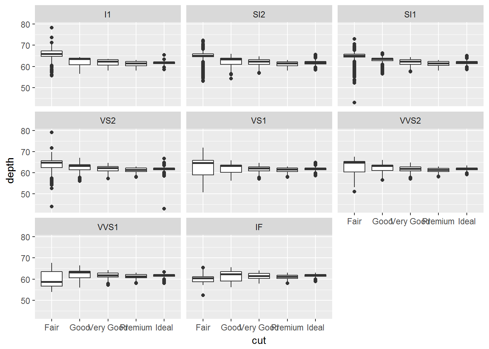

Getting started
A.Bailey
Learning Objectives
By the end of this lesson the learner will:
- Have been introduced to ggplot2 for visualisation
- Performed some coding basics, assigning objects and calling functions
- Have been introduced to working with scripts
- Have worked with some basic data types in R, including how to subset.
Data visualisation
We’ll start with visualisation some data using the ggplot2 pacakage. We start here as we gather data to ask and answer questions, and visualising data often provides the answers.
We’re using ggplot2 as this implements the grammer of graphics, for describing and building graphs. This is far from the only way to create graphs, but in this course we’ll be working within the tidyverse, a set of packages that implement a coherent set of tools for data science in R. ggplot2 is a package that is part of the tidyverse package.
First we need to load the tidyverse package into our environment. Packages only need to be installed once, but loaded at the start of every session.
library(tidyverse)## Loading tidyverse: ggplot2
## Loading tidyverse: tibble
## Loading tidyverse: tidyr
## Loading tidyverse: readr
## Loading tidyverse: purrr
## Loading tidyverse: dplyr## Conflicts with tidy packages ----------------------------------------------## filter(): dplyr, stats
## lag(): dplyr, statsIf it’s not installed you’ll need to install it and then run the library() function again.
install.packages("tidyverse")
library(tidyverse)Using graphs to answer questions
Do cars with big engines use more fuel than cars with small engines?
Included in ggplot2 is a data frame called mpg containing variables in columns and observations in rows collected by the US Environmental Protection Agency for 38 models of cars.
Type mpg in the console window to take a look:
mpgTry ?mpg to learn more about the data.
- Engine size in litres is in the
displcolumn. - Fuel efficiency on the highway in miles per gallon is given in the
hwycolumn.
To plot engine size (x-axis) against fuel efficiency (y-axis) we do the following:
ggplot(data = mpg) + geom_point(mapping = aes(x=displ, y=hwy))
This plot shows a negative relationship between engine size and fuel efficiency.
What we did here was call the ggplot() function to create an empty graph, where the first arguement is the data (here mpg). The we used a geom_point() function to add a layer of points mapping the aesthetics for the x and y axes.
Mapping is always paired to aesthetics aes(). An asthetic is a visual property of the objects in your plot, such a point size, shape or point colour.
Here we just used the values of x and y as points, but we could add a colour or shape aesthetic too.
But why?
Suppose we also were trying to understand the relationship between the type of car, the engine size and fuel efficency. To contain all this information in a single plot we need to have a third aesthetic, a third property to decribe the car type, contained in the class column.
ggplot(data = mpg) + geom_point(mapping = aes(x=displ, y=hwy, colour=class))
As we might expect, bigger cars such as SUVs tend to have bigger engines and are also less fuel efficient, but some smaller cars such as 2seaters also have big engines and greater fuel efficency. Hence we have a more nuanced view with this additional aesthetic.
Check out the ggplot2 documentation for all the aesthetic possibilities (and google for examples): http://ggplot2.tidyverse.org/reference/
So now we have re-useuable code snippet for generating plots in R:
ggplot(data = <DATA>) +
<GEOM_FUNCTION>(mapping = aes(<MAPPINGS>))What is the availability of different types of diamond?
Plotting in R can do more than just display raw data, it can transform it at the same time.
Also, we only looked at one type of geometric object, geom_point, last time. Geoms are the type of data display ggplot2 creates e.g. points, boxplots, bar charts. Here we’ll see some of the other geom types.
Let’s look at another built in data set diamonds.
diamondsThis data set has records of about 54,000 diamonds, including price (dollars), quality of the cut (cut) and weight (carat).
Let’s create a barplot of diamond cut quality using our code snippet:
ggplot(data = diamonds) +
geom_bar(mapping = aes(x=cut))What’s happened here? Rather than plotting the raw data, ggplot has transformed the data by counting the the number of diamonds in the row of data frame corresponding with each quality.
This statistical transformation of counting the rows is a default of geom_bar(), by reading the help we can find out more ?geom_bar, and how to change it.
We see that ideal cut quality diamonds are most abundant.
The depth measurement describes the relationship of the height to its width as a precentage. Plotting this as a boxplot automatically calculates the the range of depths, and associated statistics for each quality type.
ggplot(data = diamonds) +
geom_boxplot(mapping = aes(x=cut,y=depth))
As before, we could apply another aesthetic, colour to also look at the same relationship, but also across the clarity types.
ggplot(data = diamonds) +
geom_boxplot(mapping = aes(x=cut,y=depth, colour=clarity))
This is getting a bit harder to read, so finally we introduce the idea of facets. Rather than mapping an additional aesthetic, we can used facets to split this into subplots using the following code:
ggplot(data = diamonds) +
geom_boxplot(mapping = aes(x=cut,y=depth)) +
facet_wrap(~ clarity)
To use facet_wrap() with a single variable we call the function with a formula such that the first arguement is ~ and then the variable clarity. This must be a discrete variable.
So generally we can see that diamonds of the greateat abundance are also the most uniform in terms of depth and clarity.
We’ll return to plotting later and look at how to make them suitable for publication by performing tasks such as relabelling axes or adding titles.
Hopefully you are beginning to see how a single line of code can do a lot.
Workflow basics
Now that we’ve run a bit of R code, let’s look at the basics of working in R to conclude this part of the lesson.
Performing calculations and assigning objects
R can be used as a calculator:
3 + 5
12 / 7Or you can created objects using the assignment operator <-:
weight_kg <- 55Read this as “weight_kg gets value 55” in your head.
Using <- can be annoying to type, so use RStudio’s keyboard shortcut: Alt + - (the minus sign) to make life easier.
Object name style is a matter of choice, but must start with a letter and can only cointain letters, numbers, _ and .. We reccomend using descriptive names and using _ between words.
So here we’ve used the name to indicate its value represents a weight in kilograms.
We can inspect an object by typing it’s name:
weight_kgWhat’s wrong here?
weight_KGError: object 'weight_KG' not found
This error illustrates that typos matter, everything must be precise and weight_KG is not the same as weight_kg. weight_KG doesn’t exist, hence the error.
Calling functions
Functions in R are objects followed by parathenses, such as library(). Functions have the form:
function_name(arg1 = val, arg2 = val2, ...)
Let’s use seq() to create a sequence of numbers, and at the same time try tab completion.
Start typing se in the console and you should see a list of functions appear, add q to shorten the list, then use the up and down arrow to hilight the function of interest seq() and hit Tab to select.
RStudio puts the cursor between the parathenses to prompt us to enter some arguements. Here we’ll use 1 as the start and 10 as the end:
seq(1,10)If we left off a parantheses to close the function, then when we hit enter we’ll see a + indicating RStudio is expecting further code. We either add the missing part or press Escape to cancel the code.
Let’s call a function and make an assignment at the same time:
my_sequence <- seq(1,10)This time nothing was returned to the console, but we now have an object called my_sequence in our environment.
Can you remember how to inspect it?
Using scripts
Using the console is very useful, but as we build up a workflow, that is to say wrting code to load packages, load data, explore the data and output some results, it’s much more useful to contain this in a script: a document of our code.
Cmd/Ctrl + Shift + N will open a new script file up and you should see something like below with the script editor pane open:

We can write and save our code in scripts for re-use, sharing or editing.
Running code and diagnosing problems
How to run lines or sections of code. How to diagnose errors.
R objects
R has five basic (atomic) classes of objects:
- character
- numeric (real numbers)
- integers (whole numbers)
- complex numbers
- logical (True/False)
Collections of objects are vectors, and vectors will only store one class of basic object. If you mix classes e.g. characters and integers, R will coerce them to be all the same class e.g. your integers may become characters.
Vectors
Inspecting and extracting elements from vectors
Subsetting vectors
Data Carpentry, 2017.
License. Questions? Feedback?
Please file
an issue on GitHub.
On Twitter: @datacarpentry